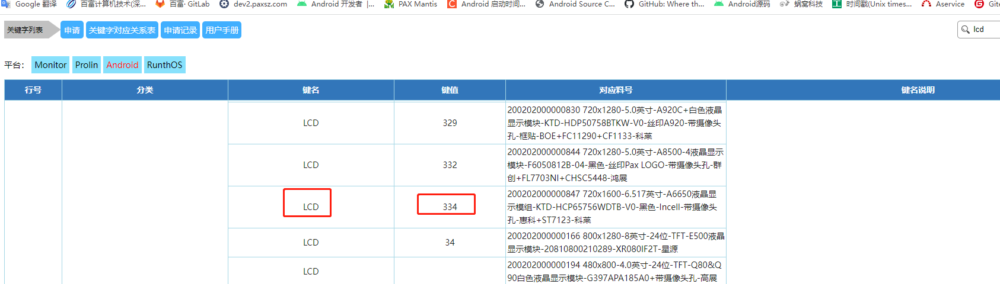
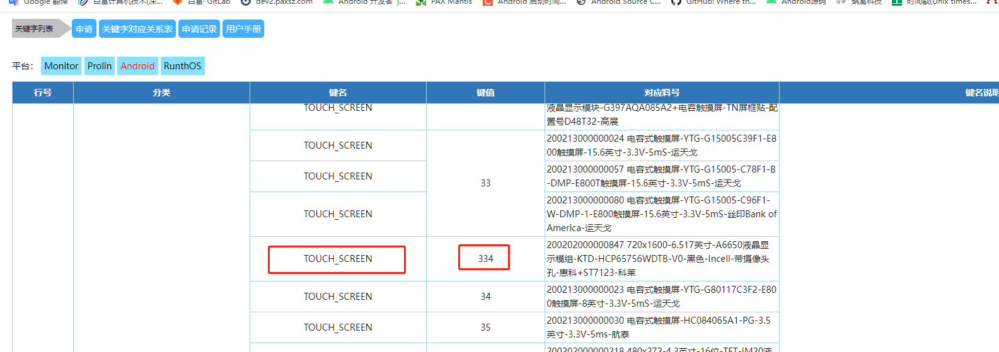
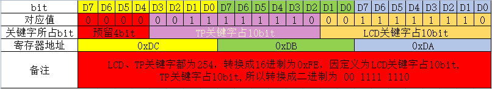
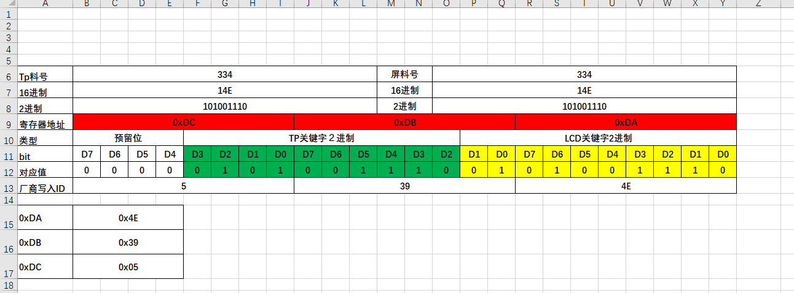

文档概要
pax 采取自定义的lcd id 跟tp id方法,下面介绍lcd id ,tp id的方法
查询料号
先从info,找到对应物料的关键字,研发与工程-> 终端资源配置-> 配置文件关键字, 点击Android.搜索需要关键字,lcd

同理查询tp,

生成id
pax标准屏的0xDA,0xDB,0xDC 三个寄存器分别存入关键字的2进制
规则如下

计算
所以只要查询到到物料号,换成2进制,一个个对应就可以

自动化excel表格
已经把excel表格自动化制作了.直接把查询到的10进制料号,写一下,就会自动化生成